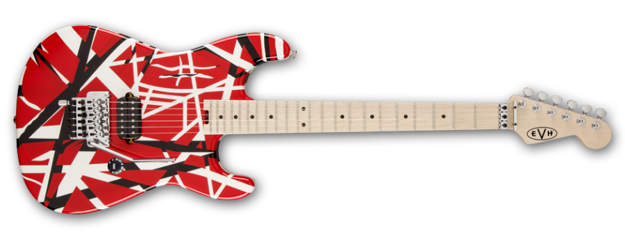

Yngwie Johann Malmsteen es un virtuoso guitarrista y compositor sueco, nacido el 30 de junio de 1963 en Estocolmo. Su nombre real es Lars Johan Yngve Lannerbäck.1 Malmsteen es un reconocido guitarrista de heavy metal que ha participado activamente en grupos como Steeler o Alcatrazz, y se le atribuye la mayor influencia en la creación del subgénero conocido como metal neoclásico, siendo uno de los grandes exponentes de las técnicas de shredding en la guitarra eléctrica durante las décadas de 1970 - 1980.
Yngwie Malmsteen
Nacimiento: 30 de junio de 1963 (edad 58 años), Estocolmo, Suecia
Estatura: 1,9 m
Grupos musicales: Alcatrazz (1983 – 1984), Steeler, Generation Axe, Hear 'n Aid
Eddie Van Hallen
Eddie Van Halen
Edward Lodewijk Van Halen (pronunciación en neerlandés: /ˈɛdvart ˈloːdəˌʋɛi̯k fɑn ˈɦaːlə(n)/; Ámsterdam, 26 de enero de 1955-Santa Mónica, California, 6 de octubre de 2020),más conocido por su nombre artístico Eddie Van Halen, fue un músico neerlandés-estadounidense, conocido mundialmente por ser el guitarrista y miembro fundador de la banda de hard rock Van Halen junto a su hermano Alex y a Mark Stone.
Fue considerado por la revista Rolling Stone como el octavo mejor guitarrista de la historia y era conocido por su técnica llamada tapping. Fue uno de los pioneros del estilo conocido como heavy metal y su solo de guitarra «Eruption» fue votado como el segundo mejor de la historia según la revista Guitar World y el sexto mejor según la revista Rolling Stone.

Eddie Van Halen
Nacimiento: 26 de enero de 1955, Ámsterdam, Países Bajos
Estatura: 1,73 m
Grupos musicales: Van Halen
Jimmy Hendrix
jimmy Hendrix
James Marshall Hendrix (nacido como Johnny Allen Hendrix; Seattle, Washington;
27 de noviembre de 1942-Notting Hill, Londres, Inglaterra;
18 de septiembre de 1970), más conocido como Jimi Hendrix,
fue un guitarrista, cantante y compositor estadounidense.
A pesar de que su carrera profesional solo duró cuatro años, es considerado uno
de los músicos y guitarristas más influyentes de la historia del rock. El Salón de la
Fama del Rock and Roll lo describe como «Indiscutiblemente uno de los músicos más
grandes de la historia del rock». Nacido en Seattle, Washington, en una diversa
familia afroestadounidense que contaba además con raíces cheroquis, comenzó a
tocar la guitarra a los 15 años. En 1961, se enroló en el ejército de los
Estados Unidos como paracaidista en la 101.ª División Aerotransportada
y se licenció al año siguiente. Poco después, se mudó a Clarksville, Tennessee, y
comenzó a tocar en algunos conciertos conocidos como Chitlin' Circuit, donde
consiguió un hueco tocando como músico de apoyo de The Isley Brothers y
después para Little Richard, con quien continuó hasta mediados de 1965.
Más adelante pasó a tocar con Curtis Knight and The Squires antes de mudarse
a Inglaterra a finales de 1966 gracias a Linda Keith, quien además llamó la
atención del bajista de The Animals Chas Chandler para convertirse en su
mánager. En cuestión de meses, Hendrix ya había obtenido tres sencillos Top 10
en el Reino Unido con su banda The Jimi Hendrix Experience: «Hey Joe»,
«Purple Haze» y «The Wind Cries Mary». Saltó a la fama en Estados Unidos
después de su actuación en el Monterrey Pop Festival de 1967.
Jimmy Hendrix
Nacimiento: 27 de noviembre de 1942, Seattle, Washington, Estados Unidos